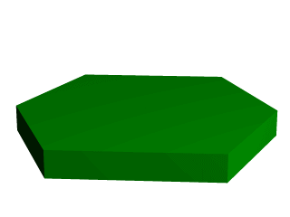
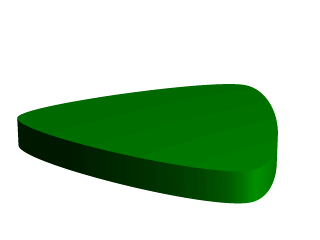
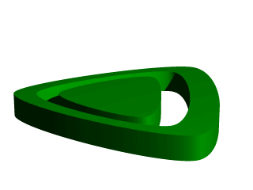
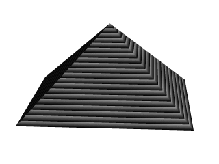
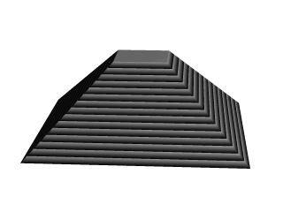

3.4.3 Prism Object
The prism is essentially a polygon or closed curve which is swept along a
linear path. We can imagine the shape so swept leaving a trail in space, and
the surface of that trail is the surface of our prism. The curve or polygon
making up a prism's face can be a composite of any number of sub-shapes,
can use any kind of three different splines, and can either keep a constant
width as it is swept, or slowly tapering off to a fine point on one end. But
before this gets too confusing, let's start one step at a time with the
simplest form of prism. We enter and render the following POV code (see file
prismdm1.pov).
#include "colors.inc"
background{White}
camera {
angle 20
location <2, 10, -30>
look_at <0, 1, 0>
}
light_source { <20, 20, -20> color White }
prism {
linear_sweep
linear_spline
0, // sweep the following shape from here ...
1, // ... up through here
7, // the number of points making up the shape ...
<3,5>, <-3,5>, <-5,0>, <-3,-5>, <3, -5>, <5,0>, <3,5>
pigment { Green }
}

A hexagonal prism shape
This produces a hexagonal polygon, which is then swept from y=0 through
y=1. In other words, we now have an extruded hexagon. One point to note is
that although this is a six sided figure, we have used a total of seven
points. That is because the polygon is supposed to be a closed shape, which
we do here by making the final point the same as the first. Technically, with
linear polygons, if we didn't do this, POV-Ray would automatically join
the two ends with a line to force it to close, although a warning would be
issued. However, this only works with linear splines, so we mustn't get
too casual about those warning messages!
3.4.3.1 Teaching An Old Spline New Tricks
If we followed the section on splines covered under the lathe tutorial
(see section "Understanding The Concept of Splines"), we know that
there are two additional kinds of splines besides linear: the quadratic and
the cubic spline. Sure enough, we can use these with prisms to make a more
free form, smoothly curving type of prism.
There is just one catch, and we should read this section carefully to keep
from tearing our hair out over mysterious "too few points in prism"
messages which keep our prism from rendering. We can probably guess where
this is heading: how to close a non-linear spline. Unlike the linear spline,
which simply draws a line between the last and first points if we forget to
make the last point equal to the first, quadratic and cubic splines are a
little more fussy.
First of all, we remember that quadratic splines determine the equation of
the curve which connects any two points based on those two points and the
previous point, so the first point in any quadratic spline is just
control point and won't actually be part of the curve. What this
means is: when we make our shape out of a quadratic spline, we must match the
second point to the last, since the first point is not on the curve -
it's just a control point needed for computational purposes.
Likewise, cubic splines need both the first and last points to be control
points, therefore, to close a shape made with a cubic spline, we must match
the second point to the second from last point. If we don't match the
correct points on a quadratic or cubic shape, that's when we will get the
"too few points in prism" error. POV-Ray is still waiting for us to
close the shape, and when it runs out of points without seeing the closure,
an error is issued.
Confused? Okay, how about an example? We replace the prism in our last bit
of code with this one (see file prismdm2.pov).
prism {
cubic_spline
0, // sweep the following shape from here ...
1, // ... up through here
6, // the number of points making up the shape ...
< 3, -5>, // point#1 (control point... not on curve)
< 3, 5>, // point#2 ... THIS POINT ...
<-5, 0>, // point#3
< 3, -5>, // point#4
< 3, 5>, // point#5 ... MUST MATCH THIS POINT
<-5, 0> // point#6 (control point... not on curve)
pigment { Green }
}

A cubic, triangular prism shape
This simple prism produces what looks like an extruded triangle with its
corners sanded smoothly off. Points two, three and four are the corners of
the triangle and point five closes the shape by returning to the location of
point two. As for points one and six, they are our control points, and
aren't part of the shape - they're just there to help compute what
curves to use between the other points.
3.4.3.2 Smooth Transitions
Now a handy thing to note is that we have made point one equal point four,
and also point six equals point three. Yes, this is important. Although this
prism would still be legally closed if the control points were not what
we've made them, the curve transitions between points would not be as
smooth. We change points one and six to <4,6> and <0,7>
respectively and re-render to see how the back edge of the shape is altered
(see file prismdm3.pov).
To put this more generally, if we want a smooth closure on a cubic spline,
we make the first control point equal to the third from last point, and the
last control point equal to the third point. On a quadratic spline, the trick
is similar, but since only the first point is a control point, make that
equal to the second from last point.
3.4.3.3 Multiple Sub-Shapes
Just as with the polygon object (see section
"Polygon Object")
the prism is very flexible, and allows us to make one prism out of several
sub-prisms. To do this, all we need to do is keep listing points after we
have already closed the first shape. The second shape can be simply an add on
going off in another direction from the first, but one of the more
interesting features is that if any even number of sub-shapes overlap, that
region where they overlap behaves as though it has been cut away from both
sub-shapes. Let's look at another example. Once again, same basic code as
before for camera, light and so forth, but we substitute this complex prism
(see file prismdm4.pov).
prism {
linear_sweep
cubic_spline
0, // sweep the following shape from here ...
1, // ... up through here
18, // the number of points making up the shape ...
<3,-5>, <3,5>, <-5,0>, <3, -5>, <3,5>, <-5,0>,//sub-shape #1
<2,-4>, <2,4>, <-4,0>, <2,-4>, <2,4>, <-4,0>, //sub-shape #2
<1,-3>, <1,3>, <-3,0>, <1, -3>, <1,3>, <-3,0> //sub-shape #3
pigment { Green }
}

Using sub-shapes to create a more complex shape
For readability purposes, we have started a new line every time we moved
on to a new sub-shape, but the ray-tracer of course tells where each shape
ends based on whether the shape has been closed (as described earlier). We
render this new prism, and look what we've got. It's the same
familiar shape, but it now looks like a smaller version of the shape has been
carved out of the center, then the carved piece was sanded down even smaller
and set back in the hole.
Simply, the outer rim is where only sub-shape one exists, then the carved
out part is where sub-shapes one and two overlap. In the extreme center, the
object reappears because sub-shapes one, two, and three overlap, returning us
to an odd number of overlapping pieces. Using this technique we could make
any number of extremely complex prism shapes!
3.4.3.4 Conic Sweeps And The Tapering Effect
In our original prism, the keyword linear_sweep is actually
optional. This is the default sweep assumed for a prism if no type of sweep
is specified. But there is another, extremely useful kind of sweep: the conic
sweep. The basic idea is like the original prism, except that while we are
sweeping the shape from the first height through the second height, we are
constantly expanding it from a single point until, at the second height, the
shape has expanded to the original points we made it from. To give a small
idea of what such effects are good for, we replace our existing prism with
this (see file prismdm4.pov):
prism {
conic_sweep
linear_spline
0, // height 1
1, // height 2
5, // the number of points making up the shape...
<4,4>,<-4,4>,<-4,-4>,<4,-4>,<4,4>
rotate <180, 0, 0>
translate <0, 1, 0>
scale <1, 4, 1>
pigment { gradient y scale .2 }
}

Creating a pyramid using conic sweeping
The gradient pigment was selected to give some definition to our object
without having to fix the lights and the camera angle right at this moment,
but when we render it, what have we created? A horizontally striped
pyramid! By now we can recognize the linear spline connecting the four points
of a square, and the familiar final point which is there to close the
spline.
Notice all the transformations in the object declaration. That's going
to take a little explanation. The rotate and translate are easy. Normally, a
conic sweep starts full sized at the top, and tapers to a point at y=0, but
of course that would be upside down if we're making a pyramid. So we flip
the shape around the x-axis to put it right side up, then since we actually
orbited around the point, we translate back up to put it in the same position
it was in when we started.
The scale is to put the proportions right for this example. The base is
eight units by eight units, but the height (from y=1 to y=0) is only one
unit, so we've stretched it out a little. At this point, we're
probably thinking, "why not just sweep up from y=0 to y=4 and avoid this
whole scaling thing?"
That is a very important gotcha! with conic sweeps. To see what's wrong
with that, let's try and put it into practice (see file
prismdm5.pov). We must make sure to remove the scale statement, and
then replace the line which reads
1, // height 2
with
4, // height 2
This sets the second height at y=4, so let's re-render and see if the
effect is the same.

Choosing a second height larger than one for the conic sweep
Whoa! Our height is correct, but our pyramid's base is now huge! What
went wrong here? Simple. The base, as we described it with the points we used
actually occurs at y=1 no matter what we set the second height for. But if we
do set the second height higher than one, once the sweep passes y=1, it keeps
expanding outward along the same lines as it followed to our original base,
making the actual base bigger and bigger as it goes.
To avoid losing control of a conic sweep prism, it is usually best to let
the second height stay at y=1, and use a scale statement to adjust the height
from its unit size. This way we can always be sure the base's corners
remain where we think they are.
That leads to one more interesting thing about conic sweeps. What if we for
some reason don't want them to taper all the way to a point? What if
instead of a complete pyramid, we want more of a ziggurat step? Easily done.
After putting the second height back to one, and replacing our scale
statement, we change the line which reads
0, // height 1
to
0.251, // height 1

Increasing the first height for the conic sweep
When we re-render, we see that the sweep stops short of going all the way
to its point, giving us a pyramid without a cap. Exactly how much of the cap
is cut off depends on how close the first height is to the second height.